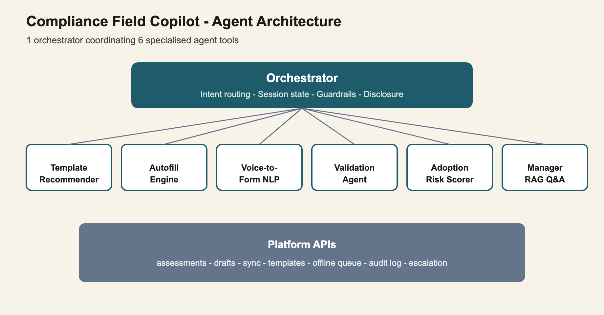

Field access was solved. Completion still depended on manual template search, typing, and self-checking.
This is a Product Strategy Automation-at-Scale problem.
Portfolio learning exercise — a product specification only, not built or delivered. Builds on Phase 1 (real) and Phase 2 (illustrative). Every number below is a design target, not a measured result.
Phase 1 got assessors into the field with a working app. But finishing an assessment still meant hunting for the right template, typing everything by hand, and double-checking your own work before submitting. I specified an AI copilot layer — voice capture, smart templates, pre-submit validation, and adoption-risk alerts — designed to speed up completion without taking control away from the assessor.
WhoField assessors and their managersAssessors still doing manual template search and typing; managers with no visibility into adoption breakdowns.
WhatMake completion faster and more confidentVoice capture, smart templates, and pre-submit checks — the assessor always keeps final say.
Why7 capabilities, 1 orchestratorSix specialized agent tools coordinated by one orchestrator, not seven disconnected features.

The Compliance Field Copilot orchestrator and its 6-tool architecture.
The automation thesis
Every site, protocol, and assessor is a little different, so "automate it" was never one decision — it's three. I split the automation strategy into what should run without asking, what should be solved by configuration instead of inference, and what should always go to a person — and measured progress by whether abandonment held steady as coverage grew, not by how much got automated.
Two things field access didn't fix
Manual capture, still slow and error-prone
Template selection and long-form typing still slowed assessors down, and manual capture kept transcription errors alive even after field access was solved.
No plain-language view into adoption
Managers had no way to see where adoption was still breaking down without digging through raw data.
What we specified
A smart template recommenderSuggests the right template by GPS and history, replacing manual search.
Voice-to-form captureAssessors speak observations; the copilot maps them to structured fields.
A pre-submit validation agentChecks completeness before submission — the assessor keeps final say.
Adoption-risk scoringFlags assessors likely to abandon before they do, not after.
A manager insights copilotPlain-language queries over field adoption data, no custom reports needed.
What scalable automation means here
Automate outrightHigh-confidence match, seen before
Template pre-fill when GPS and assessment history match a known site/protocol pair with high confidence. No confirmation step, full audit log.
Solve with configurationKnowable shape, variable rules
Required-field sets and validation thresholds that differ by site type or jurisdiction — the variation lives in a rules engine, not in a model guessing at intent.
Escalate to a personLow confidence or first-time pattern
New site types, conflicting history, or ambiguous GPS/history matches route to the assessor or manager, and get logged for pattern mining, not silently retried.
The same three-lane split used to decide what to automate, configure, or escalate; the target is holding abandonment rate steady as coverage grows, not raising an automation-coverage number for its own sake.
What escalation patterns taught us
Recurring escalations became configuration, not exceptionsA cluster of escalations from one region's site type turned into a new configuration template class, instead of a growing list of special-cased overrides.
Ambiguity got a name, not a confidence-tuning loopRepeated low-confidence GPS/history matches at multi-protocol sites became a distinct "site ambiguity" flag with its own lightweight resolution flow, rather than chasing a better model score.
One-off escalations stayed manual, on purposeEscalations that never recurred were left for a person to handle each time — automating a case that happens once isn't scale, it's overhead.